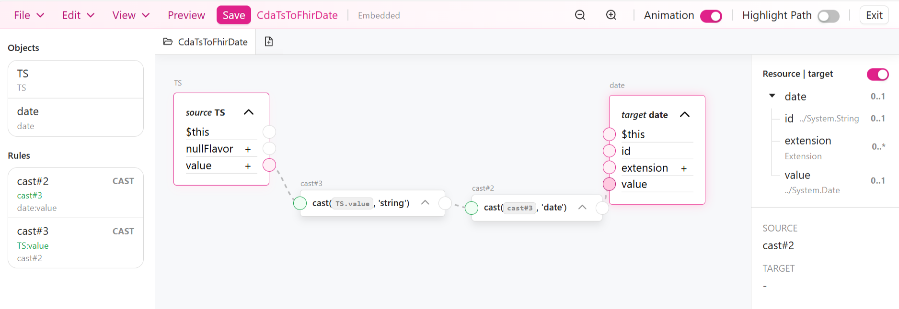

POC - Mapping CDA to FHIR
0.1.0 - ci-build

POC - Mapping CDA to FHIR
0.1.0 - ci-build

POC - Mapping CDA to FHIR - version de développement local (intégration continue v0.1.0) construite par les outils de publication FHIR (HL7® FHIR® Standard). Voir le répertoire des versions publiées
Note : Les méthodes et outils de mapping présentés ci‑dessous sont fournis à titre informatif. Ils illustrent différentes approches identifiées sans pour autant avoir été toutes testées dans le cadre de ce guide d'implémentation.
La transformation de documents CDA vers des ressources FHIR peut s’appuyer sur différentes méthodes, outre l’approche basée sur le FHIR Mapping Language. Les exemples présentés ci-après donnent un aperçu de quelques solutions existantes et illustrent la diversité des approches disponibles pour ce type de transformation.
Cette catégorie regroupe les solutions permettant de définir des mappings CDA → FHIR au moyen d’interfaces graphiques. Celles-ci offrent une représentation visuelle des structures source et cible, ce qui facilite l’élaboration des règles de transformation par des utilisateurs non développeurs. Parmi les outils disponibles figure notamment TermX.
TermX est une solution open source développée par la société estonienne Kodality, dédiée à la modélisation, à la gestion des terminologies et à la transformation de données autour de FHIR. Elle intègre un éditeur visuel du FHIR Mapping Language (FML), conçu pour permettre à des analystes métier ou experts fonctionnels de définir graphiquement les règles de correspondance entre un modèle source et un modèle cible, tout en masquant la complexité syntaxique du langage FML.

Les méthodes de transformation XML exploitent directement la structure XML du document CDA pour exprimer des règles de sélection, de réorganisation et de recomposition des données. Dans le cadre d’un mapping CDA vers FHIR, elles sont particulièrement adaptées aux transformations centrées sur l’organisation du document, la navigation dans l’arbre XML et la production d’un résultat structuré, sans recours à une couche intermédiaire de modélisation. Selon le langage et l’outillage retenus, le résultat produit peut être un document XML ou, dans certains cas, une représentation JSON
XSLT est un langage standardisé par World Wide Web Consortium (W3C), conçu principalement pour transformer des documents XML en d’autres documents XML. La transformation est décrite sous la forme d’une feuille de style composée de règles, généralement fondées sur des motifs de correspondance et des expressions XPath. XSLT 3.0 introduit notamment des mécanismes de modularisation et de streaming, utiles pour le traitement de documents XML volumineux.
XQuery est un langage de requête standardisé par le World Wide Web Consortium (W3C) pour interroger, extraire et recomposer des données XML. Fondé sur XPath, il permet d’exprimer une logique de transformation dans laquelle le document source est parcouru, certaines données sont sélectionnées et filtrées, puis un résultat cible est reconstruit sous la forme d’un fragment XML ou JSON. Dans le cadre d’un document CDA, cette approche permet de cibler précisément des sections, des entrées ou des valeurs, puis de les réorganiser selon la structure attendue en sortie. XQuery 3.1 prend également en charge JSON grâce à l’introduction des maps et des arrays dans son modèle de données.
Les approches de transformation modèle vers modèle ne manipulent pas directement un fichier XML comme une suite de nœuds ou de texte. Elles reposent sur une représentation abstraite et structurée des données, dans laquelle les artefacts source et cible sont décrits par des métamodèles. La transformation consiste alors à définir des règles indiquant comment les éléments d’un modèle conforme au métamodèle source doivent être convertis en éléments d’un modèle conforme au métamodèle cible. Ces approches s’inscrivent dans les démarches de Model-Driven Engineering (MDE) et sont souvent mises en œuvre dans des environnements comme Eclipse Modeling Framework (EMF), qui permettent de définir des métamodèles, de manipuler leurs instances et de générer du code ou d’autres artefacts associés.
ATL est un langage de transformation de modèles développé dans l’écosystème Eclipse. Il permet d’exprimer des règles décrivant comment des éléments d’un modèle source doivent être reconnus, transformés et projetés dans un modèle cible. ATL est présenté comme un langage principalement déclaratif, tout en proposant également des constructions impératives lorsque certaines transformations sont difficiles à exprimer uniquement sous forme de règles. Son fonctionnement repose donc sur l’application de règles de correspondance entre des instances conformes à un métamodèle source et à un métamodèle cible.
QVT (Query/View/Transformation) est un ensemble de langages normalisés par l’Object Management Group (OMG), permettant de définir comment un modèle peut être transformé en un autre. Une transformation QVT s’appuie toujours sur des métamodèles, qui décrivent la structure des modèles manipulés (par exemple les métamodèles CDA ou FHIR, ou les métamodèles Ecore/UML dans Eclipse). On distingue trois langages QVT :
Cette catégorie regroupe des approches de génération textuelle fondées sur des templates. Leur mécanisme consiste à appliquer des templates à un modèle ou à des données source afin de produire automatiquement une sortie textuelle structurée ; selon l’outil retenu, cette sortie peut correspondre à du code, de la documentation, des fichiers de configuration ou, dans certains cas, à des ressources FHIR.
Acceleo est un générateur de texte basé sur des modèles. Il repose sur EMF (Eclipse Modeling Framework), un environnement de modélisation dans lequel les données ne sont pas manipulées directement comme du texte brut, mais comme des objets organisés selon une structure définie à l’avance. Cette structure est décrite par un métamodèle, souvent exprimé en Ecore, qui précise quelles classes existent, quels attributs elles portent et quelles relations elles entretiennent. À partir de ces modèles EMF, Acceleo parcourt les éléments décrits et leur applique des templates afin de produire automatiquement une sortie textuelle structurée. Le principe est donc le suivant : décrire d’abord la structure du domaine avec EMF, puis utiliser Acceleo pour transformer cette structure en texte.
Liquid est un langage de templates généraliste qui sert à générer automatiquement un texte à partir de données. Son mécanisme repose sur l’insertion dynamique de variables, de conditions, de boucles et de filtres dans un gabarit textuel, afin de produire une sortie structurée. Dans l’écosystème FHIR, HL7 documente un usage spécifique de Liquid pour la construction de narratifs de ressources et pour la génération de ressources à partir de sources externes telles que HL7 v2 ou CDA.
Kodjin Data Mapper est un outil de transformation de données de santé vers FHIR. Il s’appuie sur des templates Liquid pour définir les règles de mapping, puis exécute ces règles afin de convertir des formats tels que HL7v2, C‑CDA ou des formats propriétaires en ressources FHIR. La documentation officielle le présente comme un service de conversion spécialisé dans l’industrialisation de ces mappings.
Cette catégorie regroupe les approches dans lesquelles la transformation CDA → FHIR est codée directement dans un langage de programmation généraliste. Elle repose sur le parsing du document XML source, l’écriture explicite des règles de transformation dans le code, puis la construction des ressources FHIR à l’aide de bibliothèques adaptées. Cette logique peut être mise en œuvre en Java, notamment avec HAPI FHIR ; en JavaScript, par transformation du XML en objets puis génération d’un FHIR JSON, avec l’appui éventuel d’un client tel que SMART on FHIR JavaScript Client ; et en Python, par manipulation XML et construction des ressources via des modèles ou clients FHIR tels que fhirclient.
Les grands modèles de langage (LLM) peuvent être mobilisés pour produire des ressources ou des bundles FHIR à partir de documents CDA (XML), de textes cliniques ou de données structurées, au moyen de prompts et de stratégies de guidage.